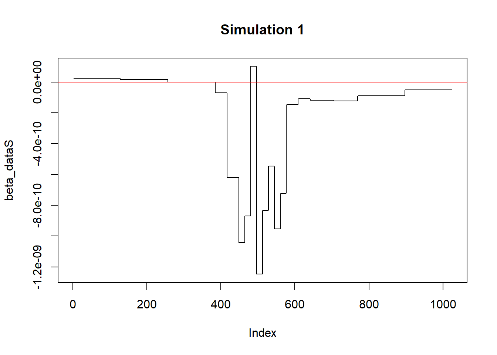
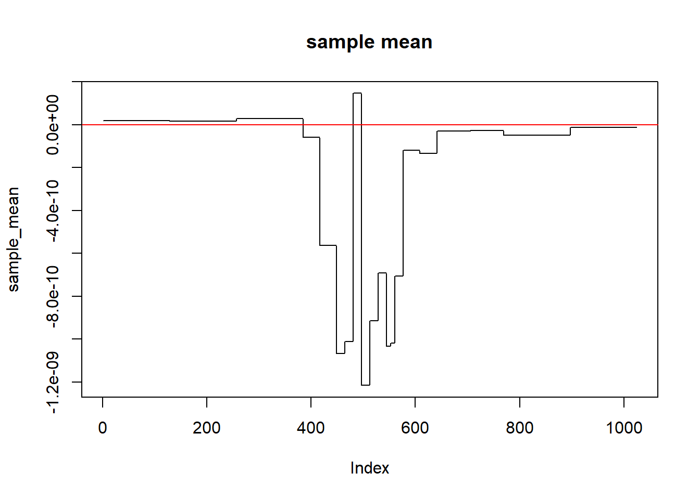
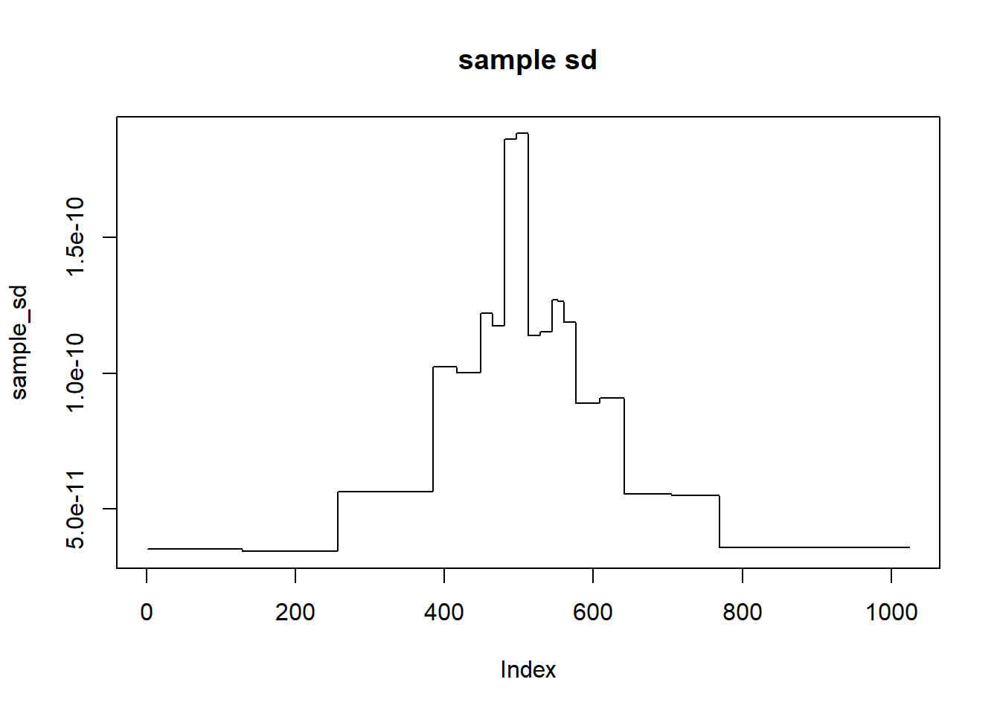

The idea behind this notebook is to generate a sequence of \(\gamma_{s,l}\)’s for each scale, \(s\) and location, \(l\). This isn’t as straightforward as in the WaveQTL (no HMT) case as the \(\gamma_{s,l}\)’s are no longer independent of each other (as they are related by the tree prior structure), hence:
\[P(\gamma_{s,l} = m \mid \hat{\pi}, y_{s,l}, g)\] is no longer a straightforward quantity to calculate, as the posterior distribution of \(\gamma_{s,l}\) now depends on all data, \(\mathbf{y} = (y_{1,1},\dots,y_{S,L^S})\). Ie. we now have that:
\[P(\gamma_{s,l} = m \mid \hat{\pi}, \mathbf{y}, g)\]
Hence, the approach we take is to simulate instances of the entire gamma vector, \(\boldsymbol{\gamma} = (\gamma_{1,1},\dots,\gamma_{S,L^S}\).
We know that:
\[ \gamma_{1,1} = \begin{cases} 1 & \text{wp} & P(\gamma_{1,1} = 1 \mid \hat{\pi}, \mathbf{y}, g) := A_{1,1}(1)\\ 0 & \text{wp} & 1 - A_{1,1}(1) \end{cases} \]
We use this to simulate a value for \(\gamma_{1,1}\), and then let this flow on sequentially to generate the remaining \(\gamma\)’s. For scale-location \((2,1)\), for example:
\[ \gamma_{2,1} = \begin{cases} 1 & \text{wp} & P(\gamma_{2,1} = 1 \mid \gamma_{1,1} = m, \hat{\pi}, \mathbf{y}, g) := B_{(2,1),(1,1)}(1,m)\\ 0 & \text{wp} & 1 - B_{(2,1),(1,1)}(1,m) \end{cases} \] which depends on \(m\), the simulated state of \(\gamma_{1,1}\). In general:
\[ \gamma_{s,l} = \begin{cases} 1 & \text{wp} & P(\gamma_{s,l} = m \mid \gamma_{p(sl)} = n, \hat{\pi}, \mathbf{y}, g) := B_{sl,p(sl)}(m,n)\\ 0 & \text{wp} & 1 - B_{sl,p(sl)}(m,n) \end{cases} \]
Luckily, both quantites \(A\) and \(B\) are output from our model. (\(B\) can be calculated as our model outputs as joint and marginal distributions, so by dividing them we get the conditional quantity, \(B\)): \[ P(\gamma_{s,l} = m \mid \gamma_{p(sl)} = n, \hat{\pi}, \mathbf{y}, g) = \frac{P(\gamma_{s,l} = m, \gamma_{p(sl)} = n \mid \hat{\pi}, \mathbf{y}, g)}{P(\gamma_{p(sl)} = n \mid \hat{\pi}, \mathbf{y}, g)} \]
Here’s an example working based on tree-level tying:
Now, let’s simulate a sequence of \(\gamma\)’s:
gamma_seq <- numeric()
set.seed(10)
rand_seq <- runif(1023)
gamma_seq[1] <- ifelse(rand_seq[1] < a_1[1], 1, 0)
for(i in 2:1023){
indx <- i
parent_indx <- get_parent_indices(indx)
parent_gamma <- gamma_seq[parent_indx]
if(parent_gamma == 1){
numerator <- b_11[indx]
denominator <- a_1[parent_indx]
}else if(parent_gamma == 0){
numerator <- b_10[indx]
denominator <- 1 - a_1[parent_indx]
}
post_prob <- numerator/denominator
gamma_seq[i] <- ifelse(rand_seq[i] < post_prob, 1, 0)
}### RUN INTERACTIVELY!
# Interleaves vectors with two bookend 0s, and a 0 between each current element
# (for spacing of elements like a tree in a plot)
vector_centeriser <- function(vect){
in_between_zeros <- length(vect) - 1
res_vect <- c(0,vect[1],0)
for(i in 1:in_between_zeros){
res_vect <- c(res_vect,vect[i + 1],0)
}
return(res_vect)
}
# Kind of a start to visualising tree coefficients
par(mfrow = c(10,1)
,mar = c(2,2,2,2))
plot(vector_centeriser(gamma_seq[1]),type = "h",ylab = "",axes = F)#; axis(1)
plot(vector_centeriser(gamma_seq[2:3]),type = "h",ylab = "",axes = F)#; axis(1)
plot(vector_centeriser(gamma_seq[4:7]),type = "h",ylab = "",axes = F)#; axis(1)
plot(vector_centeriser(gamma_seq[8:15]),type = "h",ylab = "",axes = F)#; axis(1)
plot(vector_centeriser(gamma_seq[16:31]),type = "h",ylab = "",axes = F)#; axis(1)
plot(vector_centeriser(gamma_seq[32:63]),type = "h",ylab = "",axes = F)#; axis(1)
plot(vector_centeriser(gamma_seq[64:127]),type = "h",ylab = "",axes = F)#; axis(1)
plot(vector_centeriser(gamma_seq[128:255]),type = "h",ylab = "",axes = F)#; axis(1)
plot(vector_centeriser(gamma_seq[256:511]),type = "h",ylab = "",axes = F)#; axis(1)
plot(vector_centeriser(gamma_seq[512:1023]),type = "h",ylab = "",axes = F)#; axis(1)Now, we have our sequence of \(\gamma\)’s, we can then simulate values for each \(\beta\). We have: \[ \beta_{s,l} = \begin{cases} \text{sample from 3-param t-dist} & \text{ if } \gamma_{s,l} = 1 \\ 0 & \text{ if } \gamma_{s,l} = 0 \end{cases} \] For some more details about simulating from a 3-parameter t-distribution, see the short page on that here. (INSERT LINK)
From our HMT output, we are given: \[ \text{mean1}_{s,l} = a_{s,l} \\ \text{var1}_{s,l} = \frac{b_{s,l}\nu_{s,l}}{\nu_{s,l} - 2} \\ \nu_{s,l} = N = 70, \forall s,l \\ \therefore b_{s,l} = \frac{\text{var1}_{s,l} * (N - 2)}{N} \]
# Load mean, var outputs from HMT
mean1 <- as.matrix(read.table(paste0(data_path,dataset,".fph.mean1.txt")))[geno_select,]
var1 <- as.matrix(read.table(paste0(data_path,dataset,".fph.var1.txt")))[geno_select,]
# Just take the 1023 numeric values (excl first one as it's the scaling coefficient), from cols 3:1025.
mean1 <- as.numeric(mean1[3:1025])
var1 <- as.numeric(var1[3:1025])
## back out a, b (from t-dist) parameters:
t_nu <- 70
t_a <- mean1
t_b <- var1*(t_nu-2)/t_nu
num_pheno <- length(mean1)
t_sample <- stats::rt(n = num_pheno, df = t_nu)
t_sample_3p <- t_a+(sqrt(t_b)*t_sample)
## Simulate beta, being either 3-param t-dist, or 0
beta_seq <- rep(0,num_pheno)
gamma_1_indx <- which(gamma_seq == 1)
beta_seq[gamma_1_indx] <- t_sample_3p[gamma_1_indx]Now we’ll use an inverse Haar wavelet transform to transform the \(\beta\)’s back into data space values (\(\alpha\)’s), and then calculate some sample statistics (mean, variance) from these.
Wmat_1024 = read.table("~/Cpp/WaveQTL_HMT/data/DWT/Wmat_1024",as.is = TRUE)
# W2mat_1024 = Wmat_1024*Wmat_1024
# currently only using rows 2->1024, as not sure what we're doing with scaling coefficient yet.
# Still columns 1->1024, to generate effect sizes at each of the 1024 bases.
### Do we need to take '-ve' or not?
# beta_dataS = as.vector(-matrix(data=beta_seq, nr = 1, nc = 1024)%*%as.matrix(Wmat_1024))
beta_dataS = as.vector(matrix(data=beta_seq, nr = 1, nc = 1023)%*%as.matrix(Wmat_1024)[2:1024,])
plot(beta_dataS, main = "Simulation 1", type = "l") The above is an example of a data space vector. Now we replicate over a number of samples.
num_samples <- 1000
set.seed(10)
beta_data_samples <- matrix(nrow = num_samples,ncol = 1024)
for(j in 1:num_samples){
# Generate gamma
gamma_seq <- numeric()
rand_seq <- runif(1023)
gamma_seq[1] <- ifelse(rand_seq[1] < a_1[1], 1, 0)
for(i in 2:1023){
indx <- i
parent_indx <- get_parent_indices(indx)
parent_gamma <- gamma_seq[parent_indx]
if(parent_gamma == 1){
numerator <- b_11[indx]
denominator <- a_1[parent_indx]
}else if(parent_gamma == 0){
numerator <- b_10[indx]
denominator <- 1 - a_1[parent_indx]
}
post_prob <- numerator/denominator
gamma_seq[i] <- ifelse(rand_seq[i] < post_prob, 1, 0)
}
# Generate beta
t_sample <- stats::rt(n = num_pheno, df = t_nu)
t_sample_3p <- t_a+(sqrt(t_b)*t_sample)
## Simulate beta, being either 3-param t-dist, or 0
beta_seq <- rep(0,num_pheno)
gamma_1_indx <- which(gamma_seq == 1)
beta_seq[gamma_1_indx] <- t_sample_3p[gamma_1_indx]
# Transform into data space
beta_data_samples[j,] = as.vector(matrix(data=beta_seq, nr = 1, nc = 1023)%*%as.matrix(Wmat_1024)[2:1024,])
}
sample_mean <- apply(beta_data_samples,MARGIN = 2,mean)
sample_sd <- apply(beta_data_samples,MARGIN = 2,sd)Plots:
plot(sample_mean,main="sample mean",type="l")
abline(h = 0, col = "red")
plot(sample_sd,main="sample sd",type="l")
abline(h = 0, col = "red")
Plots in WaveQTL style:
ymin_beta = min(sample_mean - 3*sample_sd) - abs(min(sample_mean - 3*sample_sd))*0.0000000001
ymax_beta = max(sample_mean + 3*sample_sd) + abs(max(sample_mean + 3*sample_sd))*0.0000000001
beta_l = sample_mean - 3*sample_sd
beta_r = sample_mean + 3*sample_sd
wh_l = which(beta_l > 0)
wh_r = which(beta_r < 0)
high_wh = sort(unique(union(wh_l, wh_r)))
xval = 1:1024
col_posi = xval[high_wh]
# pdf("../test/dsQTL/effectSize.pdf", width = 8, height=3)
par(mar = c(2,4,4,2))
plot(1,1,type="n", xlab = "position", ylab = "Effect size",ylim=c(ymin_beta, ymax_beta),xlim=c(1, 1024),main ="Posterior mean +/-3 posterior standard deviation", axes=FALSE)
axis(2)
if(length(col_posi) > 0){
for(j in 1:length(col_posi)){
polygon(c(col_posi[j]-0.5, col_posi[j]-0.5, col_posi[j]+0.5, col_posi[j]+0.5), c(ymin_beta-2, ymax_beta+2, ymax_beta+2, ymin_beta-2), col ="pink", border = NA)
}
}
abline(h = 0, col = "red")
points(xval, sample_mean, col = "blue", type="l")
points(xval, beta_l, col = "skyblue", type="l")
points(xval, beta_r, col = "skyblue", type="l")
box()